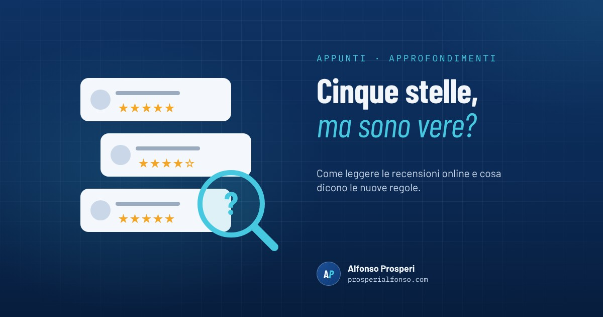

Prima di prenotare un ristorante, scegliere un hotel o comprare online, quasi tutti leggono le recensioni. Sono il passaparola di oggi, e proprio per questo c'è chi prova a falsarle: giudizi comprati, stelle gonfiate, critiche inventate contro un concorrente. Vediamo come leggerle con occhio critico e cosa è cambiato con le nuove regole.
Come riconoscere una recensione sospetta
- Tutte entusiaste e tutte uguali: frasi generiche, molti punti esclamativi, nessun dettaglio concreto.
- Arrivate tutte insieme: decine di recensioni nello stesso giorno, magari per un'attività appena aperta.
- Profili vuoti: account senza foto, con una sola recensione o con recensioni in città diverse nello stesso giorno.
- Solo cinque stelle o solo una: la realtà di solito sta nel mezzo. Le recensioni da tre o quattro stelle, con pregi e difetti, sono spesso le più utili.
Un consiglio pratico: leggi le recensioni più recenti e quelle negative, e guarda come risponde l'attività. Una risposta educata e concreta dice molto.
Cosa dicono le regole
Pubblicare o comprare recensioni false è una pratica commerciale scorretta, che l'Antitrust può sanzionare. Dal 2023 i siti che mostrano recensioni devono anche spiegare se e come verificano che siano scritte da chi ha davvero acquistato o usato il prodotto.
In Italia, con la legge 11 marzo 2026, n. 34 (la legge annuale sulle piccole e medie imprese), le regole sono diventate più precise, soprattutto per ristoranti, hotel e servizi. In sintesi:
- può recensire solo chi ha davvero usato il prodotto o il servizio;
- la recensione va scritta entro un tempo limitato dall'esperienza: le linee guida dell'Antitrust parlano di 30 giorni;
- sono vietate le recensioni comprate o scambiate con sconti e vantaggi;
- le attività possono chiedere la rimozione delle recensioni false o non più attuali.
E per chi ha un'attività?
Le recensioni contano: influenzano chi deve scegliere e aiutano anche a essere trovati su Google e sulle mappe. Il modo giusto per averne è chiederle ai clienti soddisfatti, senza offrire nulla in cambio, e rispondere a tutte, anche alle critiche. Le recensioni negative, se gestite bene, sono un'occasione per migliorare e per mostrare serietà.
Le recensioni false sono anche uno dei segnali dei negozi online truffa: ne parlo nella guida al Black Friday senza fregature.